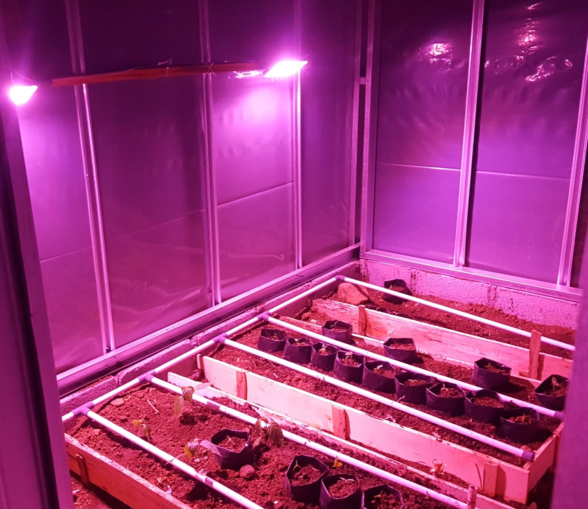
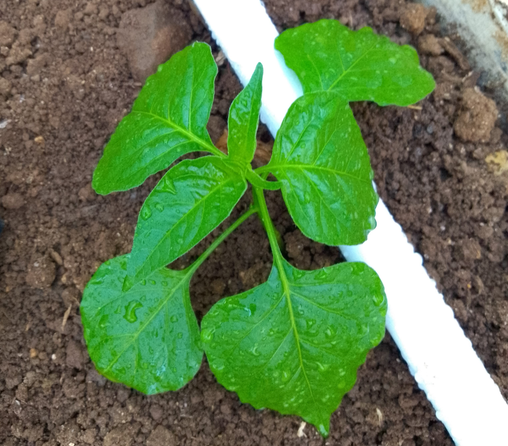
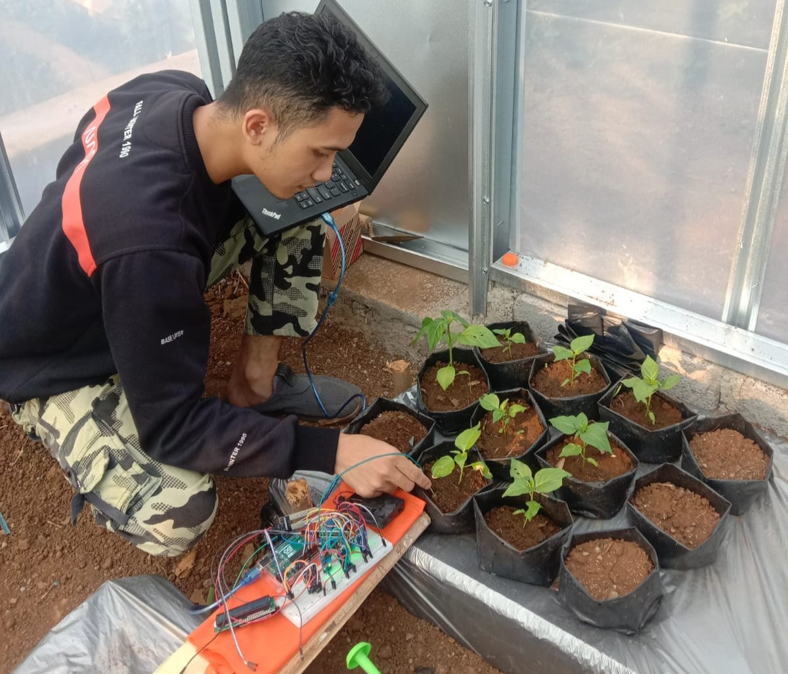
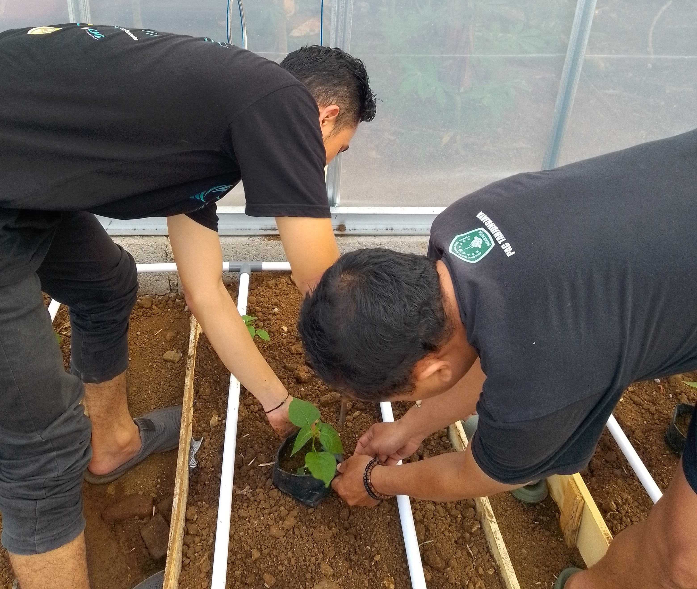
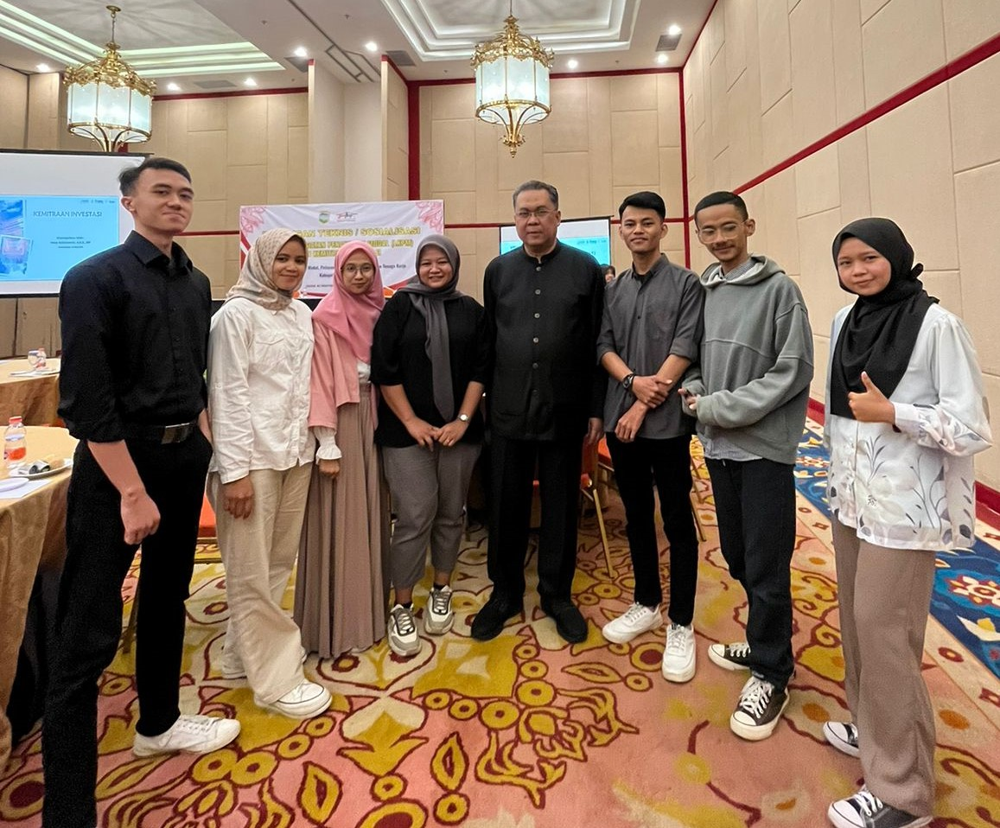
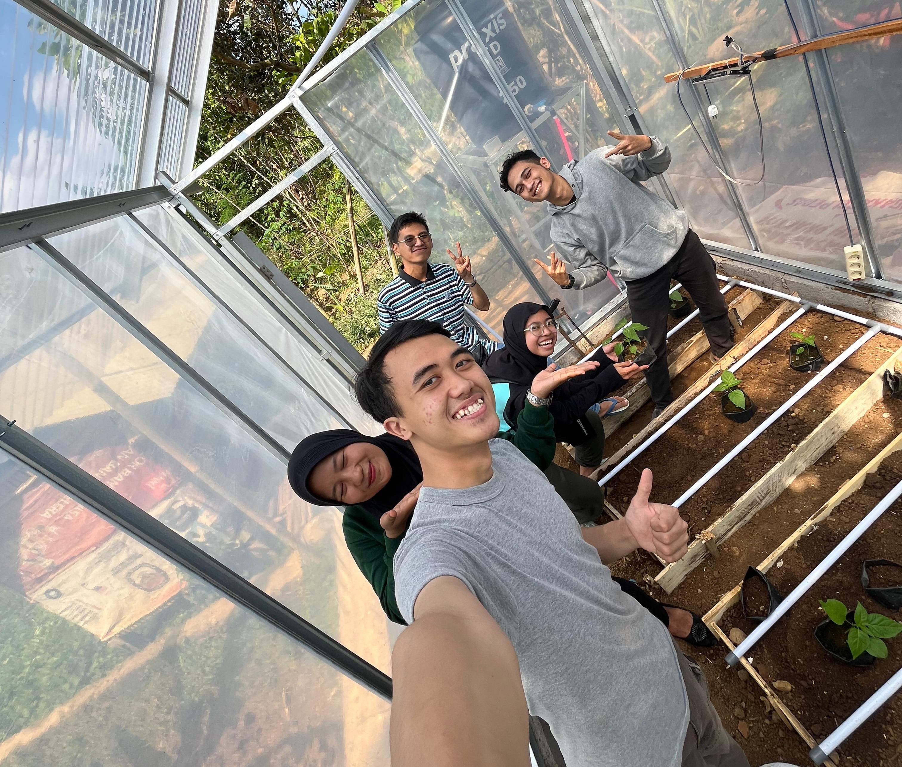

Galeri

Tanaman Cabai ini merupakan hasil dari pembenihan yang telah dilakukan selama 2 bulan yaitu dari bulan juli hingga agustus. Tanaman cabai ini merupakan uji coba kami dalam melakukan pengujian terhadap alat penyiram otomatis untuk dapat melihat keakuratan dalam proses penyiraman secara real time (tepat waktu).
Read More

Ini merupakan proses pengujian alat yang dilakukan untuk melihat keakuratan sensor yang digunakan. Hasil dari pengujian yang dilakukan yaitu bahwa sensor menghasilkan data terbalik sehingga perlu perbaikan pada integrasi yang dilakukan, namun dalam melakukan timer untuk penyiraman telah bekerja dengan sangat baik dalam waktu 1 menit.
Read More

Kegiatan ini merupakan pemindahan tanaman cabai yang mulai tumbuh besar. Pemindahan tanaman ini dilakukan bersama dengan wakil ketua kelompok tani yang ada dilingkungan tempat kami melakukan penelitian ini. Selain dari pada itu kami juga melakukan pemberian benih cabai secara gratis kepada masyarakat yang berdatangan mengunjungi tempat kami melakukan pengujian terhadap alat yang telah dibuat.
Read More

Acara ini diselenggarakan langsung oleh pemerintah setempat tentang tata cara membuat perizinan produk khususnya NIB. Acara ini dilaksanakan di Hotel Al-Hambra, Kab Tasikmalaya. Acara ini dihadiri oleh perwakilan setiap kelompok usaha P2MW Sekolah Tinggi Teknologi Cipasung.
Read More
